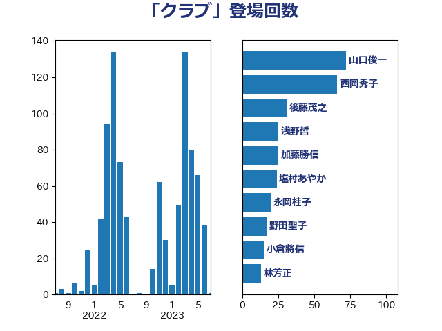

単語「クラブ」

| 山口俊一 | 自由民主党 | 72 回 |
| 西岡秀子 | 国民民主党 | 66 回 |
| 後藤茂之 | 自由民主党 | 31 回 |
| 浅野哲 | 国民民主党 | 25 回 |
| 加藤勝信 | 自由民主党 | 25 回 |
| 塩村あやか | 立憲民主党 | 24 回 |
| 永岡桂子 | 自由民主党 | 20 回 |
| 野田聖子 | 自由民主党 | 17 回 |
| 小倉將信 | 自由民主党 | 15 回 |
| 林芳正 | 自由民主党 | 13 回 |
| 坂本祐之輔 | 立憲民主党 | 13 回 |
| 熊谷裕人 | 立憲民主党 | 12 回 |
| 斎藤アレックス | 国民民主党 | 12 回 |
| 伊藤忠彦 | 自由民主党 | 12 回 |
| 大西英男 | 自由民主党 | 11 回 |
| 橋本岳 | 自由民主党 | 10 回 |
| 赤嶺政賢 | 日本共産党 | 9 回 |
| 木原稔 | 自由民主党 | 9 回 |
| 伊佐進一 | 公明党 | 9 回 |
| 芳賀道也 | 国民民主党 | 8 回 |
| 根本匠 | 自由民主党 | 8 回 |
| 山崎正恭 | 公明党 | 8 回 |
| 上野賢一郎 | 自由民主党 | 8 回 |
| 竹内譲 | 公明党 | 7 回 |
| 浮島智子 | 公明党 | 7 回 |
| 岸田文雄 | 自由民主党 | 7 回 |
| 塚田一郎 | 自由民主党 | 7 回 |
| 前原誠司 | 国民民主党 | 7 回 |
| 鈴木馨祐 | 自由民主党 | 6 回 |
| 笹川博義 | 自由民主党 | 6 回 |
| 平口洋 | 自由民主党 | 6 回 |
| 堀場幸子 | 日本維新の会 | 6 回 |
| 三ッ林裕巳 | 自由民主党 | 6 回 |
| 高木毅 | 自由民主党 | 5 回 |
| 西銘恒三郎 | 自由民主党 | 5 回 |
| 稲田朋美 | 自由民主党 | 5 回 |
| 末松信介 | 自由民主党 | 5 回 |
| 早稲田ゆき | 立憲民主党 | 5 回 |
| 早坂敦 | 日本維新の会 | 5 回 |
| 寺田学 | 立憲民主党 | 5 回 |
| 宮口治子 | 立憲民主党 | 5 回 |
| 宮内秀樹 | 自由民主党 | 5 回 |
| 古川元久 | 国民民主党 | 5 回 |
| 佐藤英道 | 公明党 | 5 回 |
| 中根一幸 | 自由民主党 | 5 回 |
| 関芳弘 | 自由民主党 | 4 回 |
| 野間健 | 立憲民主党 | 4 回 |
| 赤羽一嘉 | 公明党 | 4 回 |
| 神津たけし | 立憲民主党 | 4 回 |
| 田中健 | 国民民主党 | 4 回 |
| 奥下剛光 | 日本維新の会 | 4 回 |
| 丸川珠代 | 自由民主党 | 4 回 |
| 鈴木義弘 | 国民民主党 | 3 回 |
| 西村康稔 | 自由民主党 | 3 回 |
| 義家弘介 | 自由民主党 | 3 回 |
| 簗和生 | 自由民主党 | 3 回 |
| 江藤拓 | 自由民主党 | 3 回 |
| 小里泰弘 | 自由民主党 | 3 回 |
| 宮本徹 | 日本共産党 | 3 回 |
| 古屋範子 | 公明党 | 3 回 |
| 今枝宗一郎 | 自由民主党 | 3 回 |
| 上川陽子 | 自由民主党 | 3 回 |
| 鰐淵洋子 | 公明党 | 2 回 |
| 鬼木誠 | 立憲民主党 | 2 回 |
| 高橋光男 | 公明党 | 2 回 |
| 阿部知子 | 立憲民主党 | 2 回 |
| 長友慎治 | 国民民主党 | 2 回 |
| 鈴木敦 | 国民民主党 | 2 回 |
| 辻元清美 | 立憲民主党 | 2 回 |
| 藤巻健太 | 日本維新の会 | 2 回 |
| 藤岡隆雄 | 立憲民主党 | 2 回 |
| 篠原孝 | 立憲民主党 | 2 回 |
| 石原正敬 | 自由民主党 | 2 回 |
| 田島麻衣子 | 立憲民主党 | 2 回 |
| 牧山ひろえ | 立憲民主党 | 2 回 |
| 漆間譲司 | 日本維新の会 | 2 回 |
| 渡辺創 | 立憲民主党 | 2 回 |
| 清水貴之 | 日本維新の会 | 2 回 |
| 池田佳隆 | 自由民主党 | 2 回 |
| 松本剛明 | 自由民主党 | 2 回 |
| 松原仁 | 立憲民主党 | 2 回 |
| 杉田水脈 | 自由民主党 | 2 回 |
| 本田太郎 | 自由民主党 | 2 回 |
| 川田龍平 | 立憲民主党 | 2 回 |
| 岸真紀子 | 立憲民主党 | 2 回 |
| 岬麻紀 | 日本維新の会 | 2 回 |
| 山際大志郎 | 自由民主党 | 2 回 |
| 山本博司 | 公明党 | 2 回 |
| 小宮山泰子 | 立憲民主党 | 2 回 |
| 大島九州男 | れいわ新選組 | 2 回 |
| 國重徹 | 公明党 | 2 回 |
| 嘉田由紀子 | 無所属 | 2 回 |
| 和田義明 | 自由民主党 | 2 回 |
| 吉田はるみ | 立憲民主党 | 2 回 |
| 上田清司 | 国民民主党 | 2 回 |
| 三木圭恵 | 日本維新の会 | 2 回 |
| 高良鉄美 | 無所属 | 1 回 |
| 高橋はるみ | 自由民主党 | 1 回 |
| 長島昭久 | 自由民主党 | 1 回 |
| 鈴木俊一 | 自由民主党 | 1 回 |
| 金子道仁 | 日本維新の会 | 1 回 |
| 金子恭之 | 自由民主党 | 1 回 |
| 野村哲郎 | 自由民主党 | 1 回 |
| 輿水恵一 | 公明党 | 1 回 |
| 赤池誠章 | 自由民主党 | 1 回 |
| 角田秀穂 | 公明党 | 1 回 |
| 西村明宏 | 自由民主党 | 1 回 |
| 藤井比早之 | 自由民主党 | 1 回 |
| 若松謙維 | 公明党 | 1 回 |
| 笠井亮 | 日本共産党 | 1 回 |
| 福島みずほ | 社会民主党 | 1 回 |
| 福山哲郎 | 立憲民主党 | 1 回 |
| 石井章 | 日本維新の会 | 1 回 |
| 盛山正仁 | 自由民主党 | 1 回 |
| 玉木雄一郎 | 国民民主党 | 1 回 |
| 湯原俊二 | 立憲民主党 | 1 回 |
| 渡辺周 | 立憲民主党 | 1 回 |
| 横山信一 | 公明党 | 1 回 |
| 森英介 | 自由民主党 | 1 回 |
| 森本真治 | 立憲民主党 | 1 回 |
| 森山浩行 | 立憲民主党 | 1 回 |
| 森屋隆 | 立憲民主党 | 1 回 |
| 柚木道義 | 立憲民主党 | 1 回 |
| 松島みどり | 自由民主党 | 1 回 |
| 本田顕子 | 自由民主党 | 1 回 |
| 本村伸子 | 日本共産党 | 1 回 |
| 斎藤嘉隆 | 立憲民主党 | 1 回 |
| 打越さく良 | 立憲民主党 | 1 回 |
| 庄子賢一 | 公明党 | 1 回 |
| 平林晃 | 公明党 | 1 回 |
| 岡本あき子 | 立憲民主党 | 1 回 |
| 山田勝彦 | 立憲民主党 | 1 回 |
| 山本香苗 | 公明党 | 1 回 |
| 山下雄平 | 自由民主党 | 1 回 |
| 小渕優子 | 自由民主党 | 1 回 |
| 小池晃 | 日本共産党 | 1 回 |
| 小林鷹之 | 自由民主党 | 1 回 |
| 太栄志 | 立憲民主党 | 1 回 |
| 大塚耕平 | 国民民主党 | 1 回 |
| 大塚拓 | 自由民主党 | 1 回 |
| 塩川鉄也 | 日本共産党 | 1 回 |
| 堤かなめ | 立憲民主党 | 1 回 |
| 城内実 | 自由民主党 | 1 回 |
| 吉良州司 | 無所属 | 1 回 |
| 吉良よし子 | 日本共産党 | 1 回 |
| 吉田とも代 | 日本維新の会 | 1 回 |
| 古川禎久 | 自由民主党 | 1 回 |
| 伊藤孝江 | 公明党 | 1 回 |
| 仁木博文 | 無所属 | 1 回 |
| 井出庸生 | 自由民主党 | 1 回 |
| 丹羽秀樹 | 自由民主党 | 1 回 |
| 中条きよし | 日本維新の会 | 1 回 |
| 中島克仁 | 立憲民主党 | 1 回 |
| 中山展宏 | 自由民主党 | 1 回 |
| 中司宏 | 日本維新の会 | 1 回 |
| 上野通子 | 自由民主党 | 1 回 |
| 上月良祐 | 自由民主党 | 1 回 |
| 一谷勇一郎 | 日本維新の会 | 1 回 |